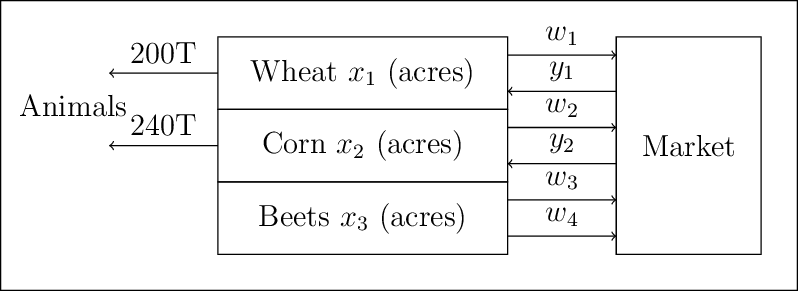

4.1. Stochastic Programming#
This notebook was prepared by Jialu Wang and revised by Maddie Watson at the University of Notre Dame.
# Imports
import sys
if "google.colab" in sys.modules:
!wget "https://raw.githubusercontent.com/ndcbe/optimization/main/notebooks/helper.py"
import helper
helper.easy_install()
else:
sys.path.insert(0, '../')
import helper
helper.set_plotting_style()
4.1.1. Farmers Example#
Here is the handout for lecture
Consider a European farmer who specializes in raising wheat, corn, and sugar beets on his 500 acres of land. During the winter, he wants to decide how much land to devote to each crop. (We refer to the farmer as “he” for convenience and not to imply anything about the gender of European farmers)
The farmer knows that at least 200 tons (T) of wheat and 240 T of corn are needed for cattle feed. These amounts can be raised on the farm or bought from a wholesaler. Any production in excess of the feeding requirement would be sold. Over the last decade, mean selling prices have been $170 and $150 per ton of wheat and corn, respectively. The purchase prices are 40% more than this due to the wholesaler’s margin and transportation costs.
Another profitable crop is sugar beet, which he expects to sell at $36/T; however, the European Commission imposes a quota on sugar beet production. Any amount in excess of the quota can be sold only at $10/T. The farmer’s quota for next year is 6000 T.
Based on past experience, the farmer knows that the mean yield on his land is roughly 2.5 T, 3 T, and 20 T per acre for wheat, corn, and sugar beets, respectively. Table \(1\) summarizes these data and the planting costs for these crops.
Wheat |
Corn |
Sugar Beets |
|
|---|---|---|---|
Yield (T/acre) |
2.5 |
3 |
20 |
Planting cost ($/acre) |
150 |
230 |
260 |
Selling price ($/T) |
170 |
150 |
36 under 6000 T, 10 above 6000 T |
Purchase price ($/T) |
238 |
210 |
– |
Minimum requirement (T) |
200 |
240 |
– |
Total available land: 500 acres
To help the farmer make up his mind, we can set up the following model. Let
\(x_1\) = acres of land devoted to wheat,
\(x_2\) = acres of land devoted to corn,
\(x_3\) = acres of land devoted to sugar beets,
\(w_1\) = tons of wheat sold,
\(y_1\) = tons of wheat purchased,
\(w_2\) = tons of corn sold,
\(y_2\) = tons of corn purchased,
\(w_3\) = tons of sugar beets sold at the favorable price,
\(w_4\) = tons of sugar beets sold at the unfavorable price.

4.1.1.1. Problem Formulation In Words#
Minimize total cost, subject to the following constraints:
Plant up to 500 acres.
Need at least 200 tons of wheat (for animals).
Need at least 240 tons of corn (for animals).
Sugar beet sales must be less than or equal to the yield from the farm.
All variables are positive.
Up to 6000 tons of sugar beets can be sold at a favorable price.
4.1.1.2. Perfect information#
With the ‘perfect’ information shown in the table above, the optimization problem is formed as:
Create a function to build a pyomo model for the farmer’s problem with crop yeilds as an input
from pyomo.environ import (ConcreteModel, Var, NonNegativeReals, Objective, minimize, ConstraintList,
summation, SolverFactory, value)
### Create a function to build a pyomo model for the farmer's problem with crop yeilds as an input
def build_model(yields):
'''
Code adapted from https://mpi-sppy.readthedocs.io/en/latest/examples.html#examples
Arguments:
yields: Yield information as a list, following the rank [wheat, corn, beets]
Return:
model: farmer problem model
'''
model = ConcreteModel()
# Define sets
all_crops = ["WHEAT", "CORN", "BEETS"]
purchase_crops = ["WHEAT", "CORN"]
sell_crops = ["WHEAT", "CORN", "BEETS_FAVORABLE", "BEETS_UNFAVORABLE"]
# Crops field allocation
model.X = Var(all_crops, within=NonNegativeReals)
# How many tons of crops to purchase
model.Y = Var(purchase_crops, within=NonNegativeReals)
# How many tons of crops to sell
model.W = Var(sell_crops,within=NonNegativeReals)
# Objective function
model.PLANTING_COST = 150 * model.X["WHEAT"] + 230 * model.X["CORN"] + 260 * model.X["BEETS"]
model.PURCHASE_COST = 238 * model.Y["WHEAT"] + 210 * model.Y["CORN"]
model.SALES_REVENUE = (
170 * model.W["WHEAT"] + 150 * model.W["CORN"]
+ 36 * model.W["BEETS_FAVORABLE"] + 10 * model.W["BEETS_UNFAVORABLE"]
)
# Maximize the Obj is to minimize the negative of the Obj
model.OBJ = Objective(
expr=model.PLANTING_COST + model.PURCHASE_COST - model.SALES_REVENUE,
sense=minimize
)
# Constraints
model.CONSTR= ConstraintList()
model.CONSTR.add(summation(model.X) <= 500)
model.CONSTR.add(
yields[0] * model.X["WHEAT"] + model.Y["WHEAT"] - model.W["WHEAT"] >= 200
)
model.CONSTR.add(
yields[1] * model.X["CORN"] + model.Y["CORN"] - model.W["CORN"] >= 240
)
model.CONSTR.add(
yields[2] * model.X["BEETS"] - model.W["BEETS_FAVORABLE"] - model.W["BEETS_UNFAVORABLE"] >= 0
)
model.W["BEETS_FAVORABLE"].setub(6000)
return model
#Solve the Optimimization Problem with Perfect yields
yields_perfect = [2.5, 3, 20]
model = build_model(yields_perfect)
solver = SolverFactory("ipopt")
solver.solve(model)
#Define a function for printing the optimal solution
def print_opt_sol(model):
'''
Arguments:
model: solved farmer problem model
Return:
Prints the optimal solution
'''
print("===Optimal solutions based on perfect information===")
print('Culture. | ', 'Wheat |', 'Corn |', 'Sugar Beets |')
print('Surface (acres) | ', f'{value(model.X["WHEAT"]):.1f}', '|',
f'{value(model.X["CORN"]):.1f}', ' |',
f'{value(model.X["BEETS"]):.1f}',' |')
print('Yield (T) | ', f'{value(model.X["WHEAT"])*yields_perfect[0]:.1f}', '|',
f'{value(model.X["CORN"])*yields_perfect[1]:.1f}', '|',
f'{value(model.X["BEETS"])*yields_perfect[2]:.1f}','|')
print('Sales (T) | ', f'{value(model.W["WHEAT"]):.1f}', '|',
f'{value(model.W["CORN"]):.1f}', ' |',
f'{value(model.W["BEETS_FAVORABLE"]) + value(model.W["BEETS_UNFAVORABLE"]):.1f}','|')
print('Purchases (T) | ', f'{value(model.Y["WHEAT"]):.1f}', ' |',
f'{value(model.Y["CORN"]):.1f}', ' |',
'-',' |')
profit = -value(model.OBJ)
print('Overall profit: $',f"{profit:.1f}")
return profit
profit_perfect = print_opt_sol(model)
===Optimal solutions based on perfect information===
Culture. | Wheat | Corn | Sugar Beets |
Surface (acres) | 120.0 | 80.0 | 300.0 |
Yield (T) | 300.0 | 240.0 | 6000.0 |
Sales (T) | 100.0 | 0.0 | 6000.0 |
Purchases (T) | 0.0 | 0.0 | - |
Overall profit: $ 118600.0
The optimal solution based on perfect information is:

This solution is easy to understand:
The farmer devotes enough land to sugar beets to reach the quota of 6000 T
Devote enough land to wheat and corn production to meet the feeding requirement
Plant wheat in the rest of the land
However, there are often some ‘real world’ constraints that break the perfect information heuristic:
Market prices change
Yield is uncertain
Planting cost materials, water, labor…
Crop rotation
A representation of the uncertainty would be to assume that years are good, fair, or bad for all crops, resulting in above average, average, or below average yields for all crops. Three scenarios are defined as:
Above average yield (+20%)
Average yield (base case)
Below average yield (-20%)
### Run Above average case
yields_above = [2.5*1.2, 3*1.2, 20*1.2]
model = build_model(yields_above)
solver = SolverFactory("ipopt")
solver.solve(model)
profit_above = print_opt_sol(model)
===Optimal solutions based on perfect information===
Culture. | Wheat | Corn | Sugar Beets |
Surface (acres) | 183.3 | 66.7 | 250.0 |
Yield (T) | 458.3 | 200.0 | 5000.0 |
Sales (T) | 350.0 | 0.0 | 6000.0 |
Purchases (T) | 0.0 | 0.0 | - |
Overall profit: $ 167666.7
### Run Below average case
yields_below = [2.5*0.8, 3*0.8, 20*0.8]
model = build_model(yields_below)
solver = SolverFactory("ipopt")
solver.solve(model)
profit_below = print_opt_sol(model)
===Optimal solutions based on perfect information===
Culture. | Wheat | Corn | Sugar Beets |
Surface (acres) | 100.0 | 25.0 | 375.0 |
Yield (T) | 250.0 | 75.0 | 7500.0 |
Sales (T) | 0.0 | 0.0 | 6000.0 |
Purchases (T) | 0.0 | 180.0 | - |
Overall profit: $ 59950.0
Running the optimization problem based on above average and below average yields gives optimal solutions:

The solutions again seem natural. When yields are high, smaller surfaces are needed to raise the minimum requirements in wheat and corn and the sugar beet quota. The remaining land is devoted to wheat, whose extra production is sold. When yields are low, larger surfaces are needed to raise the minimum requirements and the sugar beet quota.
Unfortunately, weather conditions cannot be accurately predicted six months ahead. The farmer must make up his mind without perfect information on yields!
4.1.1.3. Stochastic Programming#
Stochastic programming optimizes when some parameters are uncertain (i.e., crop yeilds), but defined with a probability distribution. It is opposed to deterministic programming where all parameters are known.
\(\Xi\): random variable, results of an ‘experiment’
\(\xi\): a realization, i.e., outcome of a simple experiment
Each realization has an associated probability \(p(\xi)\). \(\Theta\) is the set of all possible realizations, \(\xi \in \Theta\).
Let \(x\) be stage 1 decision variables (make now, i.e., land allocation), \(y\) be stage 2 decision variables (wait-and-see, i.e., buy/sell crops), a deterministic optimization problem is formed as:
\(\min f(x,y,\theta)\)
\(\ \ \ \ \ \ g(x,y,\theta) \leq 0\)
\(\ \ \ \ \ \ u(x,y,\theta) = 0\)
When the parameters \(\theta\) are uncertain, the corresponding stochastic optimization problem is formed as:
\(\min E[f(x,y,\Xi)]\)
\(\ \ \ \ \ \ g(x,y,\Xi) \leq 0\)
\(\ \ \ \ \ \ u(x,y,\Xi) = 0\)
4.1.2. Key Concepts#
4.1.2.1. Probability Review#
Example: roll a 6-sided die.
\( \xi \) is the realization (outcome) of the experiment (e.g., roll the die once).
\( p(\xi) \) represents the probability for each realization.
\(\Theta\) represents the set of all possible realizations/outcomes (e.g., \(\Theta\) = {1,2,3,4,5,6}, numbers on a die).
The probability density \( p(\xi) \) encodes the probability for all realizations \(\xi \in \Theta\)
Key properties:
\( 0 \leq p(\xi) \leq 1 \quad \forall \quad \xi \in \Theta \)
\(\int_{\xi \in \Theta} p(\xi)d\xi = 1\) for continous probabilities
\(\sum_{\xi \in \Theta} p(\xi) = 1\) for discrete probabilities.
Example: rolling a 6-sided die.
\( P(\xi) = 1/6 \) for each side of the die.
4.1.2.2. Infinite Dimensional Formulation#
Continuous random variables have the key property:
\(0 \leq p(\xi) \leq 1\) for all \(\xi \in \Theta\)
\(\int p(\xi) d\xi = 1\)
The expectation is formed as:
\(E_{\Xi} = \int_{\Xi} f(\xi) P_{\Xi}(\xi) d\xi\)
4.1.2.3. Discrete (Finite Dimensional) Approximations#
Discrete random variables have the key property:
\(0 \leq p(\xi) \leq 1\) for all \(\xi \in \Theta\)
\(\sum p(\xi) = 1\)
The expectation is formed as:
\(E_{\Xi} = \sum_{\Xi} f(\xi) w(\xi)\)
4.1.2.4. General Two-Stage Stochastic Programming Formulation#
\( \min \sum_{\xi} w(\xi) f(x, y_\xi, \xi) \)
Subject to: \( g(x, y_\xi, \xi) \leq 0, \quad h(x, y_\xi, \xi) = 0 \)
Key features:
Replace expectation with summation.
Constraints enforced only for \( \xi \) realizations.
\( y \) reacts to uncertainty in \( \xi \).
4.1.2.5. Include uncertainty in the Farmer’s Problem (two-stage stochastic program)#
Now the farmer wants to assess the benefits and losses of each decision in each situation.
Decisions on land assignment (\(x_1\), \(x_2\), \(x_3\)) have to be taken now, but sales and purchases (\(w_i, i=1,...,4\), \(y_j, j=1,2\)) depend on the yields. This forms the two-stage stochastic program:
Stage 1 decisions: land assignments (\(x_1\), \(x_2\), \(x_3\))
Uncertainty is realized
Stage 2 decisions: wait-and-see (sales and purchases)
It is useful to index those decisions by a scenario index \(s=1,2,3\) according to above average, average or below average yields, respectively. This creates a new set of variables \(w_{i,s}, i=1,2,3,4, s=1,2,3\) and \(y_{j,s}, j=1,2, s=1,2,3.\) For e.g., \(w_{3,2}\) represents the amount of sugar beets sold at the favorable price if yields are average.
If the three scenarios have an equal probability of 1/3, the farmer’s problem is formed as:
def build_sp_model(yields):
'''
Code adapted from https://mpi-sppy.readthedocs.io/en/latest/examples.html#examples
It specifies the extensive form of the two-stage stochastic programming
Arguments:
yields: Yield information as a list, following the rank [wheat, corn, beets]
Return:
model: farmer problem model
'''
model = ConcreteModel()
all_crops = ["WHEAT", "CORN", "BEETS"]
purchase_crops = ["WHEAT", "CORN"]
sell_crops = ["WHEAT", "CORN", "BEETS_FAVORABLE", "BEETS_UNFAVORABLE"]
scenarios = ["ABOVE","AVERAGE","BELOW"]
# Fields allocation
model.X = Var(all_crops, within=NonNegativeReals)
# How many tons of crops to purchase in each scenario
model.Y = Var(purchase_crops, scenarios, within=NonNegativeReals)
# How many tons of crops to sell in each scenario
model.W = Var(sell_crops, scenarios, within=NonNegativeReals)
# Objective function
model.PLANTING_COST = 150 * model.X["WHEAT"] + 230 * model.X["CORN"] + 260 * model.X["BEETS"]
model.PURCHASE_COST_ABOVE = 238 * model.Y["WHEAT", "ABOVE"] + 210 * model.Y["CORN","ABOVE"]
model.SALES_REVENUE_ABOVE = (
170 * model.W["WHEAT", "ABOVE"] + 150 * model.W["CORN","ABOVE"]
+ 36 * model.W["BEETS_FAVORABLE","ABOVE"] + 10 * model.W["BEETS_UNFAVORABLE","ABOVE"])
model.PURCHASE_COST_AVE = 238 * model.Y["WHEAT", "AVERAGE"] + 210 * model.Y["CORN","AVERAGE"]
model.SALES_REVENUE_AVE = (
170 * model.W["WHEAT", "AVERAGE"] + 150 * model.W["CORN","AVERAGE"]
+ 36 * model.W["BEETS_FAVORABLE","AVERAGE"] + 10 * model.W["BEETS_UNFAVORABLE","AVERAGE"])
model.PURCHASE_COST_BELOW = 238 * model.Y["WHEAT", "BELOW"] + 210 * model.Y["CORN","BELOW"]
model.SALES_REVENUE_BELOW = (
170 * model.W["WHEAT", "BELOW"] + 150 * model.W["CORN","BELOW"]
+ 36 * model.W["BEETS_FAVORABLE","BELOW"] + 10 * model.W["BEETS_UNFAVORABLE","BELOW"])
model.OBJ = Objective(
expr=model.PLANTING_COST + 1/3*(model.PURCHASE_COST_ABOVE + model.PURCHASE_COST_AVE + model.PURCHASE_COST_BELOW)
- 1/3*(model.SALES_REVENUE_ABOVE + model.SALES_REVENUE_AVE + model.SALES_REVENUE_BELOW),
sense=minimize
)
# Constraints
model.CONSTR= ConstraintList()
model.CONSTR.add(summation(model.X) <= 500)
model.CONSTR.add(yields[0] * model.X["WHEAT"] + model.Y["WHEAT","AVERAGE"] - model.W["WHEAT","AVERAGE"] >= 200)
model.CONSTR.add(yields[0]*1.2 * model.X["WHEAT"] + model.Y["WHEAT","ABOVE"] - model.W["WHEAT","ABOVE"] >= 200)
model.CONSTR.add(yields[0]*0.8 * model.X["WHEAT"] + model.Y["WHEAT","BELOW"] - model.W["WHEAT","BELOW"] >= 200)
model.CONSTR.add(yields[1] * model.X["CORN"] + model.Y["CORN","AVERAGE"] - model.W["CORN","AVERAGE"] >= 240)
model.CONSTR.add(yields[1]*1.2 * model.X["CORN"] + model.Y["CORN","ABOVE"] - model.W["CORN","ABOVE"] >= 240)
model.CONSTR.add(yields[1]*0.8 * model.X["CORN"] + model.Y["CORN","BELOW"] - model.W["CORN","BELOW"] >= 240)
model.CONSTR.add(
yields[2] * model.X["BEETS"] - model.W["BEETS_FAVORABLE","AVERAGE"] - model.W["BEETS_UNFAVORABLE","AVERAGE"] >= 0
)
model.CONSTR.add(
yields[2]*1.2 * model.X["BEETS"] - model.W["BEETS_FAVORABLE","ABOVE"] - model.W["BEETS_UNFAVORABLE","ABOVE"] >= 0
)
model.CONSTR.add(
yields[2]*0.8 * model.X["BEETS"] - model.W["BEETS_FAVORABLE","BELOW"] - model.W["BEETS_UNFAVORABLE","BELOW"] >= 0
)
model.W["BEETS_FAVORABLE","AVERAGE"].setub(6000)
model.W["BEETS_FAVORABLE","ABOVE"].setub(6000)
model.W["BEETS_FAVORABLE","BELOW"].setub(6000)
return model
### calculate two-stage stochastic problem
yields_perfect = [2.5, 3, 20]
model = build_sp_model(yields_perfect)
solver = SolverFactory("ipopt")
solver.solve(model)
profit_2stage = -value(model.OBJ)
print("===Optimal solutions of two-stage stochastic problem===")
print('Culture. | ', 'Wheat |', 'Corn |', 'Sugar Beets |')
print('Surface (acres) | ', f'{value(model.X["WHEAT"]):.1f}', '|',
f'{value(model.X["CORN"]):.1f}', ' |',
f'{value(model.X["BEETS"]):.1f}',' |')
print('First stage: s=1 (Above average)')
print('Culture. | ', 'Wheat |', 'Corn |', 'Sugar Beets |')
print('Yield (T) | ', f'{value(model.X["WHEAT"])*yields_perfect[0]*1.2:.1f}', '|',
f'{value(model.X["CORN"])*yields_perfect[1]*1.2:.1f}', '|',
f'{value(model.X["BEETS"])*yields_perfect[2]*1.2:.1f}','|')
print('Sales (T) | ', f'{value(model.W["WHEAT","ABOVE"]):.1f}', '|',
f'{value(model.W["CORN","ABOVE"]):.1f}', ' |',
f'{value(model.W["BEETS_FAVORABLE","ABOVE"]) + value(model.W["BEETS_UNFAVORABLE","ABOVE"]):.1f}','|')
print('Purchases (T) | ', f'{value(model.Y["WHEAT","ABOVE"]):.1f}', ' |',
f'{value(model.Y["CORN","ABOVE"]):.1f}', ' |',
'-',' |')
print('First stage: s=2 (Average average)')
print('Culture. | ', 'Wheat |', 'Corn |', 'Sugar Beets |')
print('Yield (T) | ', f'{value(model.X["WHEAT"])*yields_perfect[0]:.1f}', '|',
f'{value(model.X["CORN"])*yields_perfect[1]:.1f}', '|',
f'{value(model.X["BEETS"])*yields_perfect[2]:.1f}','|')
print('Sales (T) | ', f'{value(model.W["WHEAT","AVERAGE"]):.1f}', '|',
f'{value(model.W["CORN","AVERAGE"]):.1f}', ' |',
f'{value(model.W["BEETS_FAVORABLE","AVERAGE"]) + value(model.W["BEETS_UNFAVORABLE","AVERAGE"]):.1f}','|')
print('Purchases (T) | ', f'{value(model.Y["WHEAT","AVERAGE"]):.1f}', ' |',
f'{value(model.Y["CORN","AVERAGE"]):.1f}', ' |',
'-',' |')
print('First stage: s=3 (Below average)')
print('Culture. | ', 'Wheat |', 'Corn |', 'Sugar Beets |')
print('Yield (T) | ', f'{value(model.X["WHEAT"])*yields_perfect[0]*0.8:.1f}', '|',
f'{value(model.X["CORN"])*yields_perfect[1]*0.8:.1f}', '|',
f'{value(model.X["BEETS"])*yields_perfect[2]*0.8:.1f}','|')
print('Sales (T) | ', f'{value(model.W["WHEAT","BELOW"]):.1f}', '|',
f'{value(model.W["CORN","BELOW"]):.1f}', ' |',
f'{value(model.W["BEETS_FAVORABLE","BELOW"]) + value(model.W["BEETS_UNFAVORABLE","BELOW"]):.1f}','|')
print('Purchases (T) | ', f'{value(model.Y["WHEAT","BELOW"]):.1f}', ' |',
f'{value(model.Y["CORN","BELOW"]):.1f}', ' |',
'-',' |')
print('Overall profit: $',f"{profit_2stage:.1f}")
===Optimal solutions of two-stage stochastic problem===
Culture. | Wheat | Corn | Sugar Beets |
Surface (acres) | 170.0 | 80.0 | 250.0 |
First stage: s=1 (Above average)
Culture. | Wheat | Corn | Sugar Beets |
Yield (T) | 510.0 | 288.0 | 6000.0 |
Sales (T) | 310.0 | 48.0 | 6000.0 |
Purchases (T) | 0.0 | 0.0 | - |
First stage: s=2 (Average average)
Culture. | Wheat | Corn | Sugar Beets |
Yield (T) | 425.0 | 240.0 | 5000.0 |
Sales (T) | 225.0 | 0.0 | 5000.0 |
Purchases (T) | 0.0 | 0.0 | - |
First stage: s=3 (Below average)
Culture. | Wheat | Corn | Sugar Beets |
Yield (T) | 340.0 | 192.0 | 4000.0 |
Sales (T) | 140.0 | 0.0 | 4000.0 |
Purchases (T) | 0.0 | 48.0 | - |
Overall profit: $ 108390.0

Such a model of a stochastic decision program is known as the \(extensive\) \(form\) of the stochastic program because it explicitly describes the second-stage decision variables for all scenarios.
This solution illustrates that it is impossible to find a solution that is ideal under all circumstances under uncertainty.
4.1.2.6. Comparing Perfect Information and the Stochastic Solutions#
Perfect Information
Yield |
Low Yield |
Average Yield |
High Yield |
|---|---|---|---|
Profit |
$59,950 |
$118,600 |
$167,667 |
Average: \( \$115,406 \), representing the WS (wait-and-see problem)
Stochastic Programming
\( WS = E_{\xi} \left[ \min_{X} f(X, \xi) \right] \)
Profit |
Low |
Average |
High |
|---|---|---|---|
Stochastic |
$48,820 |
$109,350 |
$167,000 |
Average: \( \$108,390 \), representing the RP (recourse problem).
\( RP = \min_{X} E_{\xi} \left[ f(X, \xi) \right] \)
4.1.2.7. Expected Value of Perfect Information (EVPI)#
Suppose yields vary over years but are cyclical. A year with above average yields is always followed by a year with average yields and then a year with below average yields. The farmer would take optimal solutions as given in perfect information chapter repectively. The mean profit in the long run will be the mean of the three figures, namely $115,406 per year.
Now assume again the yields vary over years but on a random basis. The farmer does not get prior information on the yields. So, the best he can do in the long run is to take the solution as given in the two-stage stochastic program. The difference between this figure and the value in the case of perfect information is \(the\) \(expected\) \(value\) \(of\) \(perfect\) \(information\) (EVPI). It represents the loss of profit due to the presence of uncertainty.
Note: In the tables above, we reported profit. But our objective was actually to minimize negative profit. We added the negative sign in the calculation below. This is because the formulas are defined for minimization problems.
\( EVPI = RP - WS = -\$108,390 - (-\$115,406) = \$7,016 \)
This represents how much the farmer is willing to pay for a perfect forecast.
Another approach is to assume expected yields and always to allocate the optimal planting surface according to these yields, which represents the expected values solution. The loss by not considering the random variation is the difference between this and the stochastic model profit, which is called the value of the stochastic solution (VSS).
4.1.2.8. Expected Value Solution (EV)#
How good is the stochastic solution compared to not considering uncertainty?
Expected Value Solution: \( \bar{x} = \arg \min_{X} f(X, \bar{\xi}) \)
Expected result using EV solution: \( EEV = E_{\xi} \left[ f(\bar{X}, \xi) \right] \)
Farmer’s: \( EEV = -\$107,240 \)
We get this value by recomputing the objective considering the scenarion data buy using the deterministic decision.
4.1.2.9. Value of Stochastic Solution (VSS)#
What is the cost of ignoring uncertainty?
VSS = EEV - RP = (-$107,240) - (-$108,390) = $ 1,150
# calculated EVPI
EVPI = (profit_perfect+profit_above+profit_below)/3 - profit_2stage
# calculate expectation value
expected = build_sp_model(yields_perfect)
# fix variables with solutions
expected.X["WHEAT"].fix(120)
expected.X["CORN"].fix(80)
expected.X["BEETS"].fix(300)
# solve the model
solver = SolverFactory("ipopt")
solver.solve(expected)
# calculate expected value
profit_expect = -value(expected.OBJ)
print('Expectation:', round(profit_expect,2), "USD")
VSS = (profit_2stage - profit_expect)
print('EVPI:', round(EVPI,2), "USD")
print('VSS:', round(VSS,2), "USD")
Expectation: 107240.00084222008
EVPI: 7015.554283317964
VSS: 1150.0010277524998
\(EVPI\) measures the value of knowing the future with certainty, while \(VSS\) assesses the value of knowing and using distributions on future outcomes.
4.1.2.10. Reference#
Biegler, L.T., 2010. Nonlinear programming: concepts, algorithms, and applications to chemical processes. Society for Industrial and Applied Mathematics.
Birge, J.R. and Louveaux, F., 2011. Introduction to stochastic programming. Springer Science & Business Media.
Code partly adapted from:
https://mpi-sppy.readthedocs.io/en/latest/quick_start.html
https://mpi-sppy.readthedocs.io/en/latest/examples.html#examples